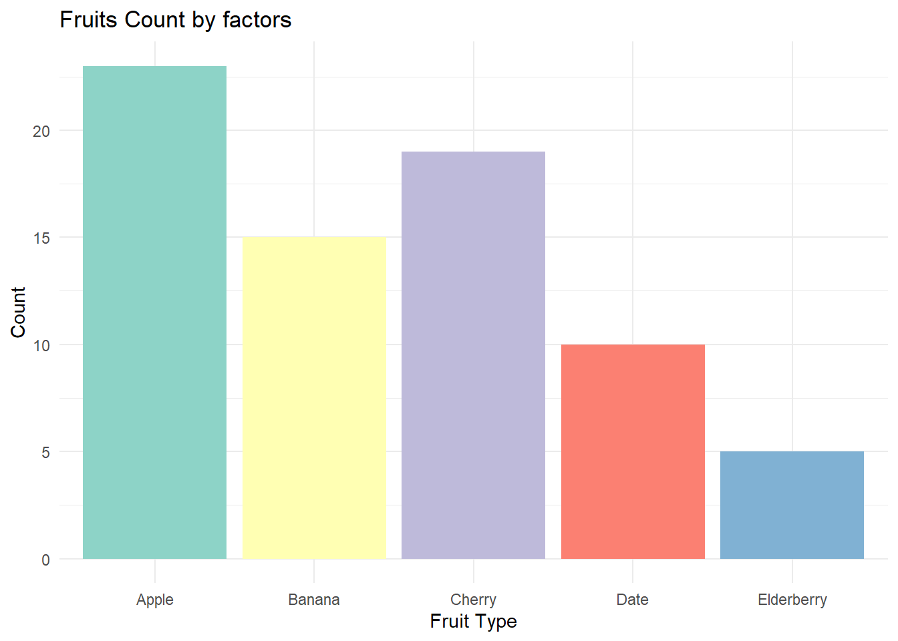
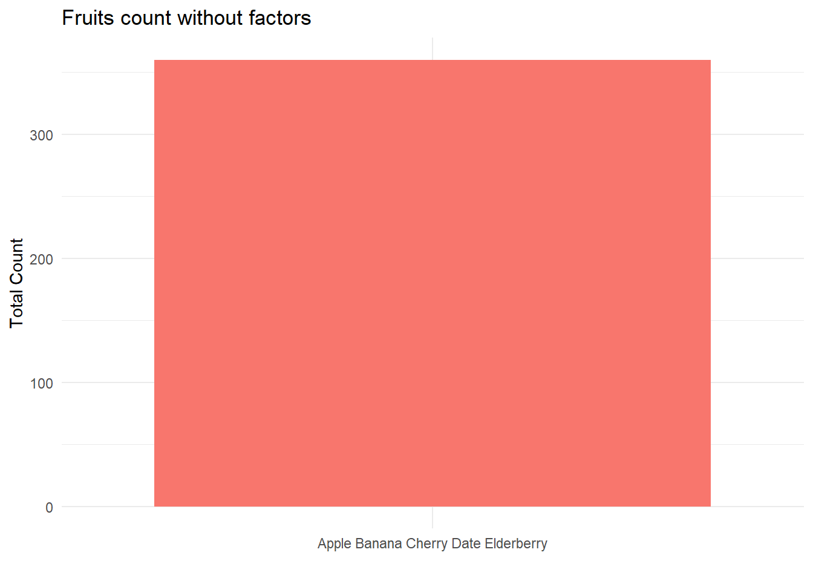

# Creating a numeric vector
numeric_vector <- c(1, 3, 5, 7, 9)3 Vectors, Data Frames, and Factors
Already know this?
If you are comfortable working with vectors, data frames, and factors in R — and you understand what str(), class(), and as.factor() do — skip ahead to the next session or go straight to Part 2: Describing and Visualizing Data.
3.1 When Do You Use This?
Everything in R is stored as a vector, a data frame, or a factor. Before you can clean data, run a t-test, or draw a plot, you need to understand these building blocks. This session covers what they are and how to work with them.
3.2 Learning Objectives
After completing this session you will be able to:
- Create and manipulate numeric, character, and logical vectors
- Understand factors and their role in statistical analysis
- Create and work with data frames and tibbles
- Select, filter, and modify columns and rows in a data frame
- Control factor levels and reference groups for regression
Vectors are fundamental data structures in R, which allow you to store multiple values in a single variable. These values should be of the same data type (e.g., all numeric, all character, etc.). Vectors are ordered, meaning that the values have a specific order in the vector.
Important
Moving forward, please work within the workbook file you created earlier. To strengthen your coding skills and develop finger muscles memory, we recommend typing out the code inside the code chunks as you learn and practice R.
3.2.1 Creating Vectors
You can create a vector using the c() function, which stands for concatenate. Here’s how:
# Creating a character vector
character_vector <- c("apple", "banana", "cherry")# Creating a logical vector
logical_vector <- c(TRUE, FALSE, TRUE)3.2.2 Accessing Vector Elements
You can access individual elements of a vector using square brackets [] with the index (position) of the element in the vector that you want.
#Accessing the second element of numeric_vector
numeric_vector[2][1] 3# here we asked R what element is at index 2
# the answer is 33.2.3 Manipulating Vectors
There are various ways to manipulate vectors in R. Some of them include:
Adding Elements: You can add elements to a vector using the c() function.
# Adding an element to numeric_vector
numeric_vector <- c(numeric_vector, 11) # numeric_vector is now c(1, 3, 5, 7, 9, 11)Removing Elements: A common way to remove elements is by using [ ] and giving the index of the element in the vector.
# Removing the first element from numeric_vector
numeric_vector <- numeric_vector[-1] # numeric_vector is now c(3, 5, 7, 9, 11)Changing Elements: You can change the value of a vector element by assigning a new value to it.
# Changing the third element of numeric_vector
numeric_vector[3] <- 10 # numeric_vector is now c(2, 3, 10, 5, 6)3.3 Exercise 3
Now it’s your turn to practice!
- Create a character vector with names of three of your favorite fruits.
- Access and print the second element of the vector.
- Add another favorite fruit to your vector.
- Remove the first element from your vector.
- Change the last element of your vector to a different food item.
- On every step verify the output, is it what you expected?
Exercise 3: Click to see solution
# 1. Create a character vector with names of three of your favorite fruits.
favorite_fruits <- c("Apple", "Banana", "Cherry")
# 2. Access and print the second element of the vector.
second_fruit <- favorite_fruits[2]
print(second_fruit)[1] "Banana"# 4. Add another favorite fruit to your vector.
favorite_fruits <- c(favorite_fruits, "Date")
print(favorite_fruits)[1] "Apple" "Banana" "Cherry" "Date" # 4. Remove the first element from your vector.
favorite_fruits <- favorite_fruits[-1]
print(favorite_fruits)[1] "Banana" "Cherry" "Date" # 4. Change the last element of your vector to a different fruit item.
favorite_fruits[3] <- "Elderberry"
print(favorite_fruits)[1] "Banana" "Cherry" "Elderberry"# Now, the favorite_fruits vector should be: c("Banana", "Cherry", "Elderberry")3.4 Factors and levels
When working with data in R, we often deal with categorical variables, which are variables that can be divided into different categories, such as “Yes” or “No”, or “Small”, “Medium”, “Large”. In R, we use a special type of variable called a factor to handle these categories. Think of factors as containers that hold and manage these categories, which we call levels.
3.4.1 Understanding Factors
Imagine you’re sorting fruits into baskets. Each basket is labeled with the name of a fruit. In R, each basket is like a level of a factor. The factor is the concept of “fruit types”. If you have three types of fruits—apples, bananas, and cherries—then your factor has three levels: “Apple”, “Banana”, and “Cherry”.
Why Use Factors?
- Organization for Analysis: Just as baskets help us organize fruits, factors help organize our data, making it easier to analyze.
- Clear Categories: Even if we didn’t collect any cherries, our “fruit type” factor still knows cherries exist as a category, keeping our data consistent.
- Order Matters: We can order our factors (like saying small, medium, and large sizes), which is important for analysis that depends on ranking.
- Visualization: Factors help R know how to group and label data in charts, which makes our visualizations clear and accurate.
Practical Example: Fruit Count Chart with factor levels
Let’s relate this to our fruit count chart below. We categorized the count of different fruits. In our chart, each fruit type is a level in our factor. This allows us to make a clear and organized bar chart, showing us how many of each fruit type we have. Remember, factors are there to make our data analysis and visualization tasks easier and more accurate, much like baskets help keep fruits organized in real life!
Note
Move your cursor over the bars in the chart to view the precise counts of each fruit type.

Practical Example: Fruit Count Chart without factor levles In this example, we didn’t specify to R that our data should be treated as categorical with distinct factor levels. Instead, we’ve labeled all entries simply as “All Fruits,” akin to placing various fruits into one basket. This approach makes it challenging to discern the quantity of each individual fruit type because we’re presented with a combined total rather than a detailed breakdown.

3.4.2 Creating and converting Factors
You can create a factor from a vector using the factor() function. Here’s how:
# Create a vector of fruit names
fruit_vector <- c("Apple", "Banana", "Cherry", "Apple", "Cherry", "Banana", "Banana", "Cherry", "Apple","Apple","Apple")fruit_vector # you can get the value of a vector just by running its name in the console or in a code chunk [1] "Apple" "Banana" "Cherry" "Apple" "Cherry" "Banana" "Banana" "Cherry"
[9] "Apple" "Apple" "Apple" Convert the vector to a factor
# In this code, convert the fruit_vector vector into a factor using the factor() function.
fruit_factor <- factor(fruit_vector)fruit_factor [1] Apple Banana Cherry Apple Cherry Banana Banana Cherry Apple Apple
[11] Apple
Levels: Apple Banana CherryLevels of a Factor The unique values in a factor are called levels. You can see the levels of a factor using the levels() function. Get the levels of factor
levels(fruit_factor) [1] "Apple" "Banana" "Cherry"Getting Summary of Factors
summary(fruit_factor) Apple Banana Cherry
5 3 3 You can change the number of the elements (fruit names in the fruit_vector) and then play with it.
Note
Why get summary of factors? It is because just like you’d want to know how many of each type of fruit you have in the basket, in statistics, you often need to sort data into categories and count them. Factors help you do that in R.
3.4.3 Ordered Factors
Understanding Ordered Factors in R In R, when we talk about data like T-shirt sizes or class levels, we call them “factors.” They are like labels we put on things that are similar, such as “Small,” “Medium,” “Large” for sizes.
But sometimes, it’s not enough to just label these things. We need to remember that some labels come before others, like how “Small” is smaller than “Medium.” We use something called “ordered factors” to do this.
Why Ordered Factors Matter
Think about lining up for a race. The order matters, right? First, second, third. If we mix it up, it would be confusing. It’s the same with our data. If we don’t use ordered factors when the order is important, we might get mixed up results.
How to Make Ordered Factors
Here’s how we make ordered factors in R:
- We tell R which labels we have, like “Small,” “Medium,” “Large.”
- We tell R to remember the order by saying
TRUEto “ordered.”
Example with T-Shirt Sizes
Let’s say we’re sorting T-shirts by size:
sizes <- c("Small", "Medium", "Large", "Medium", "Small")To keep the sizes in order, we make an ordered factor:
ordered_sizes <- factor(sizes, ordered = TRUE, levels = c("Small", "Medium", "Large"))Now R knows that “Small” comes before “Medium,” and “Medium” comes before “Large.”
Using Ordered Factors
When we have our sizes in order, we can do things like see if one size is bigger than another, or make graphs where “Small” comes before “Medium,” not just wherever they popped up in our list. So, ordered factors help us keep our data tidy and in line, like students in a school line-up. It helps us make sense of things that should follow a certain order, giving us clearer results when we’re working with our information. This is super helpful for making sure we understand our data the right way.
3.4.4 Converting Factors
Let’s use a fruit basket again as an example to illustrate this concept:
Suppose you have a basket filled with an assortment of fruits: apples, bananas, and cherries. You decide to organize them by putting a little sticker on each that says “apple”, “banana”, or “cherry”. In R, this is like creating a factor for your fruits.
Here’s some R code that might represent our fruit basket as a factor:
fruits <- c("apple", "banana", "cherry", "apple", "cherry")
fruit_factor <- factor(fruits)Now, let’s explore the conversions and understand why and when you might need them:
To Character:
Sometimes, you want to check the stickers without sorting the fruits. This is like converting your factor to a character vector. You’re not interested in how many apples or cherries you have, just what’s in the basket.
fruit_labels <- as.character(fruit_factor)Why and when you need this: You might need to do this when you’re only interested in the names of the fruits for a task like labeling a shelf, where the count doesn’t matter.
- To Numeric:
On other occasions, you might decide to assign a number to each type of fruit: apples = 1, bananas = 2, cherries = 4. This is like converting your factor to a numeric vector. Instead of names, each fruit is represented by a number.
fruit_numbers <- as.numeric(fruit_factor)Why and when you need this: This is useful when you’re entering your fruit data into a system that requires numbers instead of names, maybe for a stocktaking system that tracks inventory with codes instead of fruit names.
In summary, whether you convert a factor into characters or numbers depends on what you need at the moment:
- Use characters when you want to work with the names or labels directly.
- Use numbers when you need to enter data into a numerical system or do some sort of calculation where categories are represented by numbers.
3.4.5 Exercise 4
Now, practice what you’ve learned!
- Create a factor variable with your favorite colors.
- Find out the levels of your factor variable.
- Create an ordered factor with levels “Low”, “Medium”, “High”.
- Get a summary of your ordered factor.
- Convert the factor back to a character vector.
Exercise 4: Click to see solution
# 1. Create a factor variable with your favorite colors.
favorite_colors <- c("Red", "Blue", "Green", "Blue", "Red")
color_factor <- factor(favorite_colors)
# 2. Find out the levels of your factor variable.
color_levels <- levels(color_factor)
color_levels # Output: "Blue" "Green" "Red"[1] "Blue" "Green" "Red" # 5. Create an ordered factor with levels "Low", "Medium", "High".
ordered_vector <- c("Low", "Medium", "High", "Medium", "Low")
ordered_factor <- factor(ordered_vector, ordered = TRUE, levels = c("Low", "Medium", "High"))
# 5. Get a summary of your ordered factor.
ordered_summary <- summary(ordered_factor)
ordered_summary # Output: a table showing the counts of each level Low Medium High
2 2 1 # 5. Convert the factor back to a character vector.
char_vector <- as.character(ordered_factor)
char_vector # Output: "Low" "Medium" "High" "Medium" "Low"[1] "Low" "Medium" "High" "Medium" "Low" 3.5 Data Frames and Tibbles
A vector stores a single column of values. A data frame stores many columns together — like a spreadsheet where every column can have a different type. This is how you will actually store and work with your research data in R.
A tibble is a modern version of a data frame from the tidyverse. It behaves the same way but has slightly better defaults (it never converts character columns to factors automatically, and it prints more neatly).
3.5.1 Creating a Data Frame
# A simple data frame with three columns
mouse_data <- data.frame(
mouse_id = c("M01", "M02", "M03", "M04", "M05"),
group = c("control", "control", "treatment", "treatment", "treatment"),
body_weight = c(24.1, 23.8, 28.5, 27.2, 29.0)
)
mouse_data mouse_id group body_weight
1 M01 control 24.1
2 M02 control 23.8
3 M03 treatment 28.5
4 M04 treatment 27.2
5 M05 treatment 29.03.5.2 Viewing the Structure
# nrow and ncol tell you the dimensions
nrow(mouse_data)[1] 5ncol(mouse_data)[1] 3# str() shows column types — very useful for diagnosing problems
str(mouse_data)'data.frame': 5 obs. of 3 variables:
$ mouse_id : chr "M01" "M02" "M03" "M04" ...
$ group : chr "control" "control" "treatment" "treatment" ...
$ body_weight: num 24.1 23.8 28.5 27.2 29# head() shows the first 6 rows (useful for large datasets)
head(mouse_data) mouse_id group body_weight
1 M01 control 24.1
2 M02 control 23.8
3 M03 treatment 28.5
4 M04 treatment 27.2
5 M05 treatment 29.03.5.3 Accessing Columns
There are three ways to get a single column. All three give the same result.
# Dollar sign: the most common approach
mouse_data$body_weight[1] 24.1 23.8 28.5 27.2 29.0# Double brackets with column name
mouse_data[["body_weight"]][1] 24.1 23.8 28.5 27.2 29.0# Double brackets with column index number
mouse_data[[3]][1] 24.1 23.8 28.5 27.2 29.03.5.4 Accessing Rows and Cells
Data frames use [row, column] indexing.
# Row 2, all columns
mouse_data[2, ] mouse_id group body_weight
2 M02 control 23.8# All rows, column 3
mouse_data[, 3][1] 24.1 23.8 28.5 27.2 29.0# Row 2, column 3
mouse_data[2, 3][1] 23.83.5.5 Creating a Tibble
library(tibble)
# tibble() works exactly like data.frame() but prints more neatly
mouse_tibble <- tibble(
mouse_id = c("M01", "M02", "M03", "M04", "M05"),
group = c("control", "control", "treatment", "treatment", "treatment"),
body_weight = c(24.1, 23.8, 28.5, 27.2, 29.0)
)
mouse_tibble# A tibble: 5 × 3
mouse_id group body_weight
<chr> <chr> <dbl>
1 M01 control 24.1
2 M02 control 23.8
3 M03 treatment 28.5
4 M04 treatment 27.2
5 M05 treatment 29
Note
When you import data with read_csv() from the readr package, it returns a tibble automatically. When you import with read.csv() (base R), it returns a data frame. Either works, but tibbles are generally easier to work with.
3.5.6 Adding and Modifying Columns
# Add a new column using the dollar sign
mouse_data$weight_kg <- mouse_data$body_weight / 1000
# Modify an existing column
mouse_data$body_weight <- round(mouse_data$body_weight, 0)
mouse_data mouse_id group body_weight weight_kg
1 M01 control 24 0.0241
2 M02 control 24 0.0238
3 M03 treatment 28 0.0285
4 M04 treatment 27 0.0272
5 M05 treatment 29 0.02903.6 Controlling Factor Levels for Statistical Analysis
When you use a factor in a regression model or an ANOVA, R automatically treats the first level alphabetically as the reference group. This affects how coefficients are interpreted. Controlling the level order is an important practical skill.
3.6.1 Why Level Order Matters
# R chooses "control" as reference automatically (alphabetical)
group_factor <- factor(c("treatment", "control", "treatment", "control"))
levels(group_factor) # "control" comes first = reference group[1] "control" "treatment"# In a regression, the coefficient for "treatment" is relative to "control"
# This is what you want — but it happens to be correct here by accident3.6.2 Setting the Reference Level with relevel()
# Explicitly set "control" as the reference group
group_factor <- relevel(group_factor, ref = "control")
levels(group_factor)[1] "control" "treatment"3.6.3 Using forcats for More Control
The forcats package (part of the tidyverse) gives you powerful tools for reordering factor levels. This is important for plots (which group appears first) and for regression (which group is the reference).
library(forcats)
# fct_relevel: move specific levels to the front
diet_group <- factor(c("high_fat", "low_fat", "control", "high_fat", "control"))
diet_reordered <- fct_relevel(diet_group, "control", "low_fat", "high_fat")
levels(diet_reordered)[1] "control" "low_fat" "high_fat"# fct_recode: rename levels
diet_renamed <- fct_recode(diet_group,
"Control diet" = "control",
"Low-fat diet" = "low_fat",
"High-fat diet" = "high_fat"
)
levels(diet_renamed)[1] "Control diet" "High-fat diet" "Low-fat diet" # fct_infreq: order by frequency (most common first) — useful for bar charts
diet_by_freq <- fct_infreq(diet_group)
levels(diet_by_freq)[1] "control" "high_fat" "low_fat"
Tip
Rule of thumb: Always check levels() on your factor columns before running a regression. Confirm that the reference group is what you intend it to be. If it is not, use fct_relevel() or relevel() to fix it.
3.7 Exercise 5
Practice building and working with a data frame that represents a real experiment.
Scenario: You ran an experiment with 8 mice in three groups: control, low-dose treatment, and high-dose treatment. You measured body weight and blood glucose.
- Create a data frame with these columns:
mouse_id(M01–M08),group(assign mice to three groups as you like),body_weight(make up realistic values in grams, roughly 22–32g),glucose(roughly 5–12 mmol/L). - Convert
groupto a factor with levels ordered:"control","low_dose","high_dose". - Print the levels of the
groupfactor. Is the reference group correct? - Calculate the mean body weight for each group using
tapply():tapply(df$body_weight, df$group, mean). - Add a new column called
glucose_categorythat is"normal"if glucose < 7 and"elevated"if glucose >= 7.
Exercise 5: Solution
# 1. Create the data frame
mice <- data.frame(
mouse_id = paste0("M0", 1:8),
group = c("control", "control", "control",
"low_dose", "low_dose",
"high_dose", "high_dose", "high_dose"),
body_weight = c(23.5, 24.1, 22.8, 26.3, 27.0, 29.5, 30.1, 28.8),
glucose = c(5.2, 5.8, 5.5, 7.1, 6.9, 9.3, 10.2, 8.7)
)
# 2. Convert group to an ordered factor
mice$group <- factor(mice$group,
levels = c("control", "low_dose", "high_dose"))
# 3. Check levels
levels(mice$group) # "control" is the reference — correct[1] "control" "low_dose" "high_dose"# 4. Mean body weight per group
tapply(mice$body_weight, mice$group, mean) control low_dose high_dose
23.46667 26.65000 29.46667 # 5. Add glucose category
mice$glucose_category <- ifelse(mice$glucose < 7, "normal", "elevated")
mice mouse_id group body_weight glucose glucose_category
1 M01 control 23.5 5.2 normal
2 M02 control 24.1 5.8 normal
3 M03 control 22.8 5.5 normal
4 M04 low_dose 26.3 7.1 elevated
5 M05 low_dose 27.0 6.9 normal
6 M06 high_dose 29.5 9.3 elevated
7 M07 high_dose 30.1 10.2 elevated
8 M08 high_dose 28.8 8.7 elevated3.8 Comprehension Check
- You create a vector with
c(1, 2, "three"). What type is the result, and why? - What does
levels(my_factor)return? - You have a column
treatmentwith values"A","B","C". In a regression, R uses"A"as the reference. How do you change the reference to"B"? - What is the difference between a data frame and a tibble?
- You want the third row and second column of a data frame called
df. What code do you write?
Answers
- Character. In R, if you mix types in a vector, everything is converted to the most general type. Numbers become character strings here (
"1","2","three"). - The unique categories (levels) of the factor, in the order R will use them.
treatment <- relevel(treatment, ref = "B")ortreatment <- fct_relevel(treatment, "B")usingforcats.- A tibble is a modern version of a data frame from the
tidyverse. It prints more neatly and never silently converts string columns to factors. For statistical analysis, they behave identically. df[3, 2]
3.9 Further Reading
- Tibbles in R for Data Science — Hadley Wickham’s explanation of tibbles
- forcats documentation — full guide to factor manipulation
- R Data Structures cheat sheet — quick reference for vectors, matrices, lists, and data frames